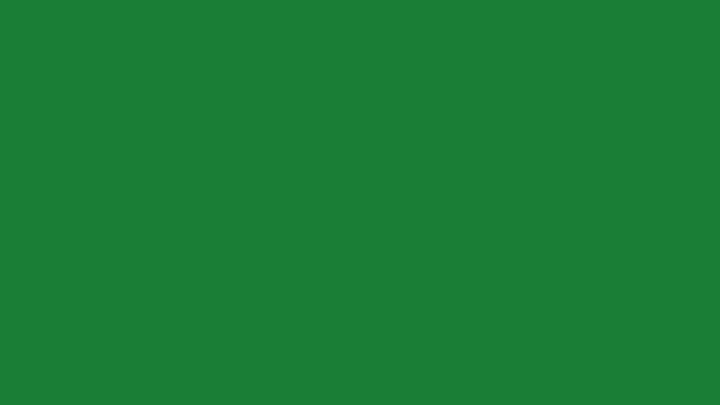

Tokens
Eine Werteliste für alles. Mehr
Scroll-getriebene Effekte, nativ über animation-timeline: view() und (Chromium) scroll-getriggerte Animationen - JavaScript nur als kleiner, opt-in Fallback oder wo CSS nicht hinkommt (Fokus, Zustand, Events). Jeder Effekt ist eine eigene Datei und einzeln einbindbar. Ohne Unterstützung und bei reduzierter Bewegung bleibt alles normal lesbar.
components/text-reveal.css - Text wird beim Hindurchscrollen hell. Zeilen und Fluss ohne JS, Wort für Wort mit js/text-reveal.js.
Zeilen (Default)
Native CSS kann heute, wofür man früher eine Animations-Bibliothek brauchte: Fortschritt an die Scroll-Position koppeln, ganz ohne Scroll-Listener.
Fluss (--flow)
Im Fluss läuft die Helligkeit Wort für Wort in Leserichtung über die Zeilen - ein einziger Verlauf auf einem Inline-Element.
Wörter (data-ncss-text-reveal)
Jedes Wort bekommt seinen eigenen Abschnitt und hebt sich einzeln ins Bild.
<p class="ncss-text-reveal">...</p>
<p class="ncss-text-reveal ncss-text-reveal--flow"><span>...</span></p>
<p class="ncss-text-reveal" data-ncss-text-reveal>...</p>components/count-up.css - die echte Zahl steht im DOM (Screenreader, ohne JS), gezählt wird in einem ::after. Chromium: einmal per CSS-Scroll-Trigger; sonst mit js/count-up.js.
<span class="ncss-count-up" data-ncss-count-up style="--ncss-count-to: 12500">12.500</span>components/marquee.css - Endlos-Laufband, hält bei Hover und Fokus an; der Button pausiert dauerhaft (WCAG 2.2.2). Reduzierte Bewegung: statische, wischbare Reihe.
helpers/reveal.css - für jedes Element (Bild, Video, Sektion). Standard scroll-gescrubbt (zurückscrollen spult zurück); --once spielt einmal zeitbasiert ab.
--circle
--wipe-right--wipe-left--wipe-up--wipe-down--inset--split--diagonal--zoom (auf einem Wrapper)--once)--circle --once--split --once--slide-up --once<img class="ncss-reveal ncss-reveal--circle" src="..." alt="...">
<figure class="ncss-reveal ncss-reveal--zoom"><img src="..." alt="..."></figure>
<section class="ncss-reveal ncss-reveal--split ncss-reveal--once" data-ncss-reveal>...</section>components/reveal-pin.css - gepinnte Bühne: das Video zieht von einer Karte auf Vollbild auf, der Intro-Text geht, ein Panel kommt.
Ein Bild, das den ganzen Raum nimmt.
Das Panel blendet erst ein, wenn das Medium den Viewport füllt.
components/scroll-horizontal.css + js/scroll-horizontal.js - vertikales Scrollen schiebt die Reihe seitlich. Per Tab durch die Links: das Script holt das fokussierte Element ins Bild. Fallback: wischbare Snap-Reihe.
<ncss-scrolly> (components/scrolly.css + js/scrolly.js) - der Schritt in der Viewport-Mitte ist aktiv und schaltet das Medium. Jeder Schritt trägt data-ncss-time; das Event ncss:step meldet {index, time}, z.B. für ein scroll-gesteuertes Video.
Letztes Event:
Ohne JavaScript stehen alle Schritte und Bilder einfach untereinander.
Mit dem Element klebt die Medien-Spalte, jeweils ein Bild ist sichtbar.
data-ncss-time gibt jedem Schritt eine Zeitmarke in Sekunden.
Schmal: das Medium sitzt oben, die Schritte laufen darunter durch.
components/curtain.css - jede Sektion bleibt stehen, die nächste gleitet darüber; --scale lässt die bedeckte zurückweichen, --dim dunkelt sie ab. Kein position: sticky - auch überlange Sektionen zeigen ihren ganzen Inhalt.
Weiterscrollen - die nächste Sektion schiebt sich darüber.
Diese Sektion ist anderthalb Bildschirme hoch und scrollt erst komplett durch, bevor sie stehen bleibt.
Unterkante von Sektion 2 - erst jetzt hält sie an und Sektion 3 gleitet darüber.
Die letzte Sektion wird nie bedeckt.